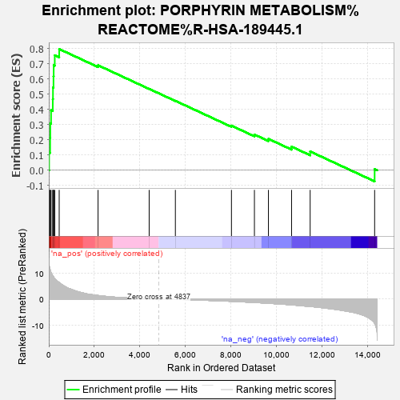

| | | Dataset | MBD2KO_post.rnk |
| Phenotype | NoPhenotypeAvailable |
| Upregulated in class | na_pos |
| GeneSet | PORPHYRIN METABOLISM%REACTOME%R-HSA-189445.1 |
| Enrichment Score (ES) | 0.7960738 |
| Normalized Enrichment Score (NES) | 2.2201204 |
| Nominal p-value | 0.0 |
| FDR q-value | 0.001390022 |
| FWER p-Value | 0.007 |
Table: GSEA Results Summary

Fig 1: Enrichment plot: PORPHYRIN METABOLISM%REACTOME%R-HSA-189445.1
Profile of the Running ES Score & Positions of GeneSet Members on the Rank Ordered List
| PROBE | GENE SYMBOL | GENE_TITLE | RANK IN GENE LIST | RANK METRIC SCORE | RUNNING ES | CORE ENRICHMENT | | 1 | ALAS2 | | | 13 | 13.516 | 0.1172 | Yes |
| 2 | UROS | | | 58 | 11.283 | 0.2127 | Yes |
| 3 | CPOX | | | 65 | 10.965 | 0.3080 | Yes |
| 4 | HMBS | | | 100 | 10.103 | 0.3939 | Yes |
| 5 | UROD | | | 175 | 8.927 | 0.4668 | Yes |
| 6 | FECH | | | 184 | 8.846 | 0.5435 | Yes |
| 7 | ABCG2 | | | 207 | 8.550 | 0.6167 | Yes |
| 8 | BLVRB | | | 215 | 8.458 | 0.6901 | Yes |
| 9 | ALAD | | | 262 | 7.741 | 0.7545 | Yes |
| 10 | PPOX | | | 457 | 6.298 | 0.7961 | Yes |
| 11 | ABCC2 | | | 2165 | 1.343 | 0.6894 | No |
| 12 | HMOX1 | | | 4412 | 0.094 | 0.5344 | No |
| 13 | ALB | | | 5564 | -0.144 | 0.4559 | No |
| 14 | ALAS1 | | | 8029 | -0.890 | 0.2927 | No |
| 15 | BLVRA | | | 9039 | -1.331 | 0.2344 | No |
| 16 | COX15 | | | 9655 | -1.637 | 0.2060 | No |
| 17 | COX10 | | | 10671 | -2.221 | 0.1550 | No |
| 18 | HMOX2 | | | 11489 | -2.852 | 0.1232 | No |
| 19 | ABCC1 | | | 14323 | -9.275 | 0.0078 | No |
Table: GSEA details [plain text format]
Fig 2: PORPHYRIN METABOLISM%REACTOME%R-HSA-189445.1: Random ES distribution
Gene set null distribution of ES for PORPHYRIN METABOLISM%REACTOME%R-HSA-189445.1